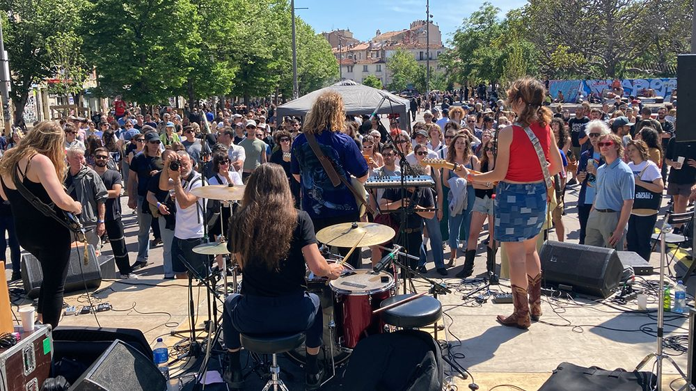
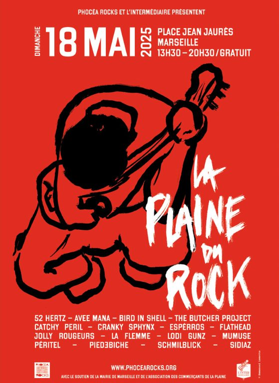
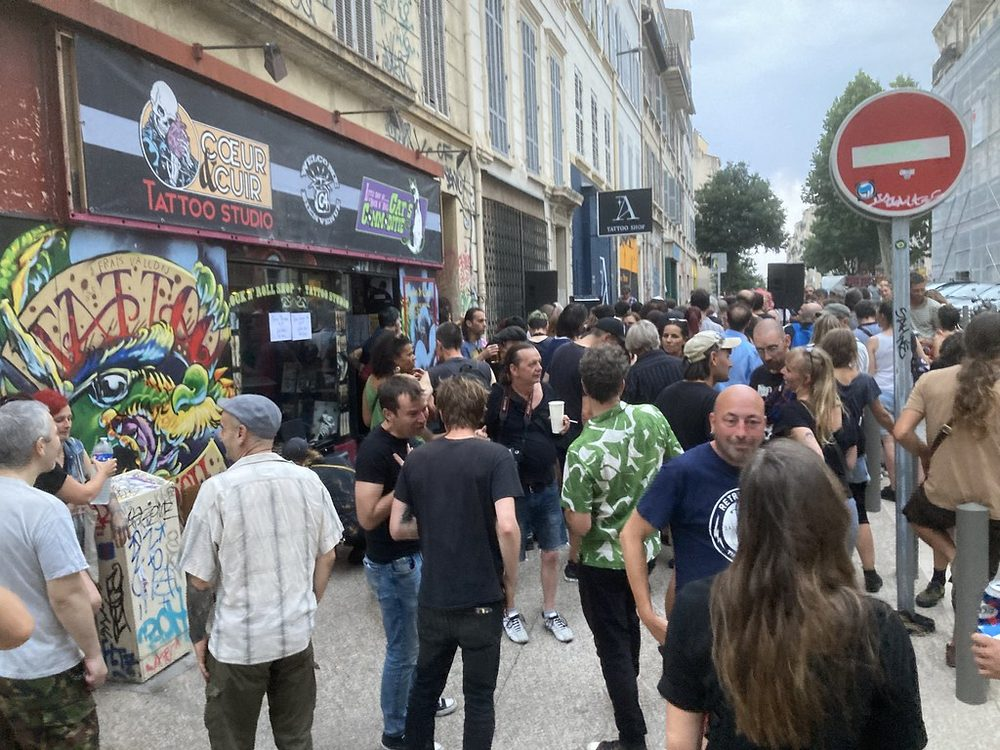
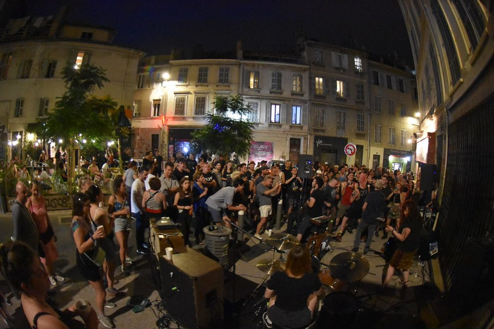
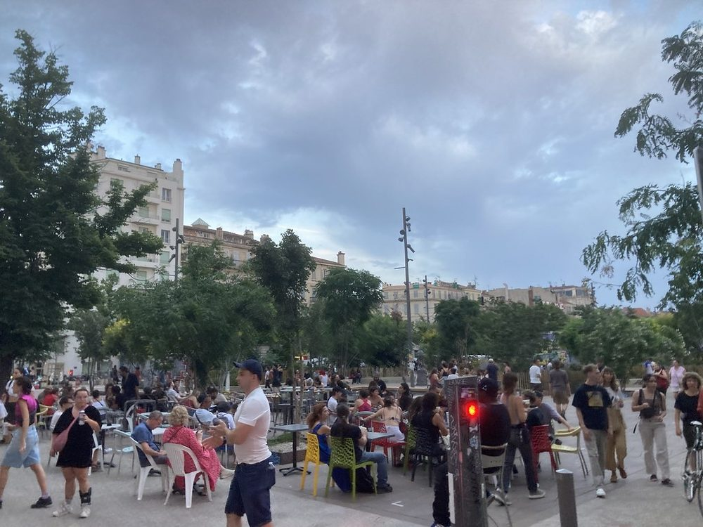
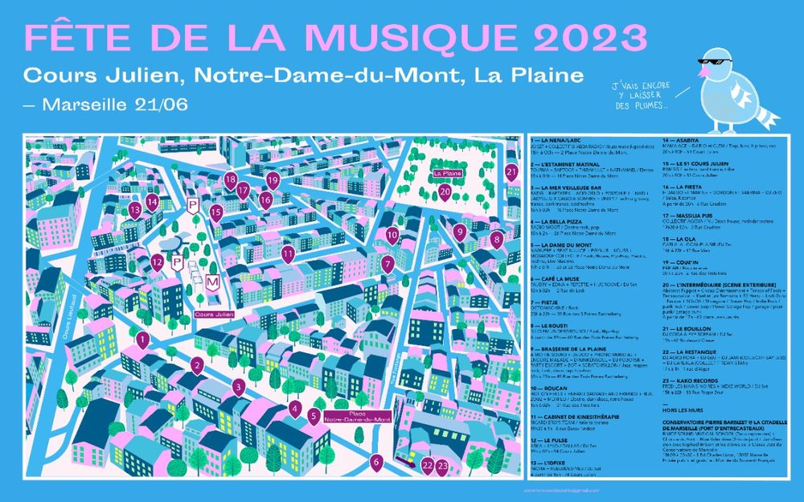
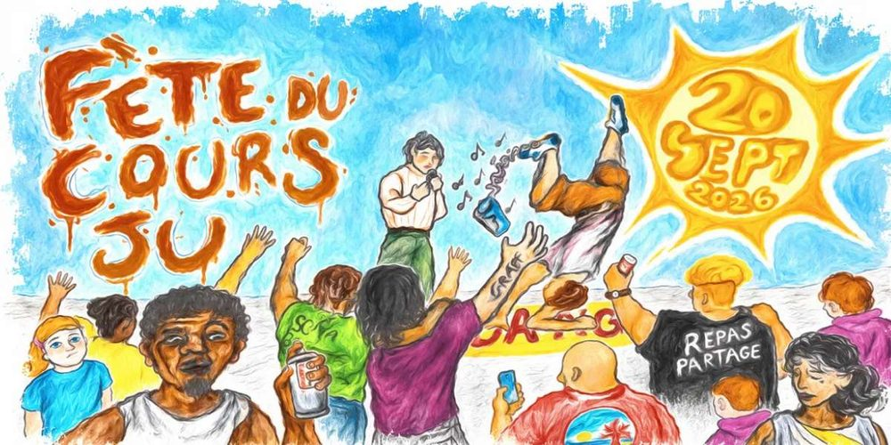
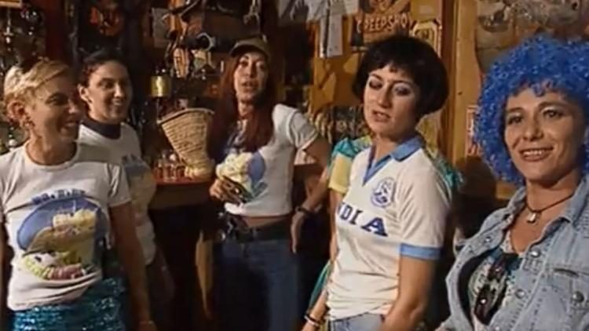
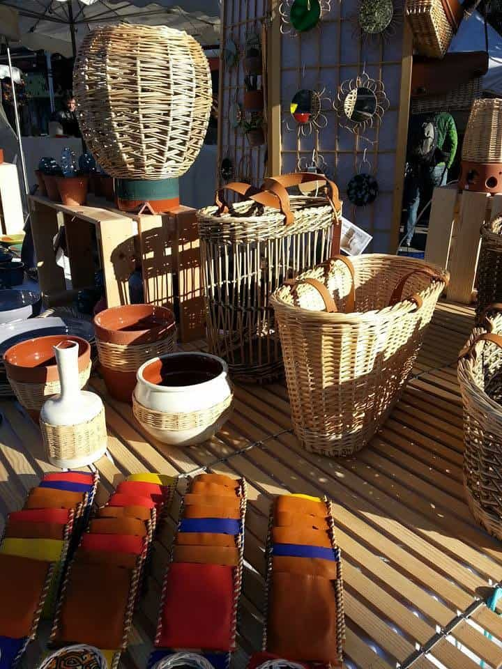
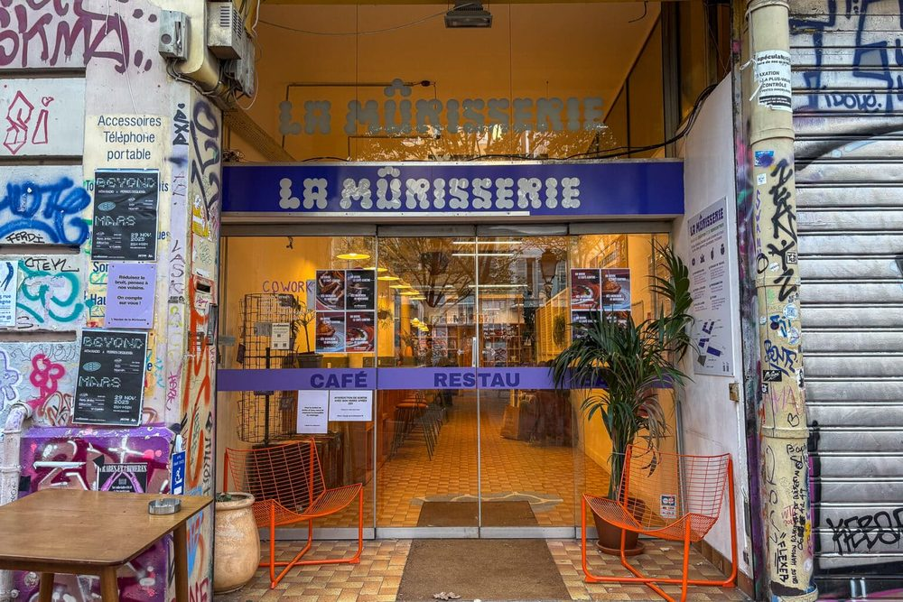

Le Cours Julien n’attend pas les grandes occasions pour faire la fête. Mais certains jours, tout le quartier descend dans la rue. Un carnaval qui brûle ses démons, un festival de rock gratuit, une élection de Miss qui ne ressemble à aucune autre : voici les rendez-vous à noter, mois par mois.
- MarsLe carnaval de La PlaineDéfilé libre et feu du Caramantran.
- MaiLa Plaine du RockUne journée de rock gratuit sur la place Jean-Jaurès.
- 21 juinLa Fête de la musiqueLe quartier devient une scène.
- SeptembreLa Fête du Cours JuGraffiti, concert et repas partagé.
- OctobreL’élection de Miss CagoleSur la terrasse du Traquenard.
- DécembreLes marchés de NoëlCréateurs sur le Cours Julien et La Plaine.
La Plaine
du Rock
Un dimanche de mai, la place Jean-Jaurès se transforme en festival. L’association Phocéa Rocks, qui défend la scène rock indépendante marseillaise depuis 2012, et la salle L’Intermédiaire y installent plusieurs scènes, baptisées en 2025 du nom des rues voisines : Trois-Mages, Chave, Ferrari, Saint-Savournin.
Au programme, du rock sous toutes ses formes : punk, garage, post-punk, metal, pop. La Plaine du Rock a pris la suite de la Rue du Rock, organisée rue Consolat de 2013 à 2019. Première édition en mai 2024 ; la troisième, le dimanche 31 mai 2026, a réuni seize groupes sur quatre scènes, gratuitement.


La Plaine du Rock · Journal Zébuline · L’affiche 2025 · Phocéa Rocks et L’Intermédiaire
La Fête
de la musique
Le 21 juin, l’Office de tourisme de Marseille le dit lui-même : le Cours Julien est l’épicentre de la fête. Chaque bar sort ses enceintes, les groupes jouent sur les terrasses, les DJ sets s’enchaînent jusque tard, et la foule circule d’une scène à l’autre entre le Cours Julien, la place Notre-Dame-du-Mont et La Plaine.
Les commerçants du quartier publient souvent un plan des concerts : en 2023, il recensait 23 scènes. Sur La Plaine, une programmation rock, punk et pop gratuite occupe l’après-midi. Un conseil : venez tôt, et à pied.

Le 21 juin 2023 sur La Plaine · Pirlouiiiit


Concerts et foule sur La Plaine, 2023 · Pirlouiiiit

Le plan des 23 scènes de 2023 · Fréquence Sud
La Fête
du Cours Ju
À la rentrée, la mairie des 6ᵉ et 8ᵉ arrondissements organise un week-end de fête sur le Cours Julien, sous le signe de la création, de la musique et du partage. En 2026, les 19 et 20 septembre : ateliers et performances de graffiti, écoutes sonores, concert le samedi soir, puis repas partagé en musique et démonstration de salsa le dimanche.

L’affiche de la Fête du Cours Ju 2026 · Mairie des 6ᵉ et 8ᵉ, via Fréquence Sud
L’élection
de Miss Cagole
Oubliez Miss France. Sur La Plaine, la seule couronne qui compte se gagne au Traquenard, le bar de la place Jean-Jaurès, qui organise l’élection de Miss Cagole depuis les années 1990, du temps où il s’appelait encore L’Univers. Le concours s’est interrompu une vingtaine d’années, avant de revenir en 2018.
La cagole, c’est la Marseillaise dans toute sa splendeur : libre, exubérante, franche du collier, qui parle fort et ne s’excuse de rien. Les candidates s’affrontent devant un jury « aussi sérieux qu’allumé » en quatre épreuves : le chant, la danse, la tchatche et le look. Le prix ? Un pot de moutarde, et le titre, on ne peut plus honorifique.

La dernière élection a eu lieu le samedi 17 octobre 2026, sur la terrasse du Traquenard, avec L’Intermédiaire, La Plaine de Fadas et l’association des commerçants de La Plaine. Ce soir-là, des manifestations avaient lieu dans toute la France, et les organisateurs ont choisi de maintenir la soirée. Pour eux, Miss Cagole a toujours été « un manifeste politique et revendicateur » : célébrer des femmes fortes qui s’assument, c’est aussi une façon de manifester.
Être cagole, ce n’est pas une couche de vernis. C’est la griffe qu’il y a en dessous.
À ne pas confondre avec Miss Cagole Nomade, une autre élection, ouverte à toutes et à tous, organisée chaque mois de décembre à l’Espace Julien. La prochaine est annoncée pour le 11 décembre 2026.
Les marchés
de Noël
Depuis la fin des années 1990, l’association Marquage organise en décembre le Grand Marché de Noël des créateurs, sur le Cours Julien et la place Jean-Jaurès. Une centaine d’exposants venus de toute la France : céramique, bijoux, textile, illustration, objets faits main. En 2025, il s’est tenu du 6 au 21 décembre, de 10 h à 19 h.
Plus intime, La Mûrisserie, le tiers-lieu du 44, cours Julien, organise aussi son marché de Noël, à la mi-décembre, avec des créateurs, des ateliers et de la musique.


Le marché des créateurs · Association Marquage · La Mûrisserie · Made in Marseille
Quand a lieu le carnaval de La Plaine ?
Au printemps, en général fin mars, un dimanche. Il part de la place Jean-Jaurès et se termine par le jugement et la mise à feu du Caramantran. La 27ᵉ édition a eu lieu le 29 mars 2026.
Qu’est-ce que l’élection de Miss Cagole ?
Un concours organisé au bar Le Traquenard, sur La Plaine, depuis les années 1990. Les candidates s’affrontent en chant, en danse, en tchatche et en look ; la gagnante remporte un pot de moutarde. La dernière élection a eu lieu le 17 octobre 2026.
Que faire au Cours Julien pour la Fête de la musique ?
Le 21 juin, le Cours Julien est l’un des épicentres de la fête à Marseille : concerts dans les bars et sur les places, DJ sets, scène rock sur La Plaine. Les commerçants du quartier publient souvent un plan des scènes.
Y a-t-il un marché de Noël au Cours Julien ?
Oui, le Grand Marché de Noël des créateurs, organisé par l’association Marquage, s’installe en décembre sur le Cours Julien et la place Jean-Jaurès, avec une centaine d’exposants.
Sources : The New Zealand Herald, Journal Zébuline, Made in Marseille, Le Traquenard et L’Intermédiaire.
Photos : NZ Herald, Made in Marseille, Jean-Luc Moreau et Pirlouiiiit (via Flickr), Journal Zébuline, Phocéa Rocks, Fréquence Sud, Europe 1, Le Traquenard, L’Intermédiaire, association Marquage. Les dates changent chaque année : vérifiez auprès des organisateurs avant de venir.